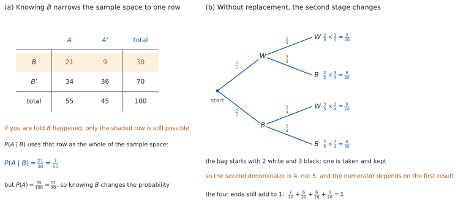
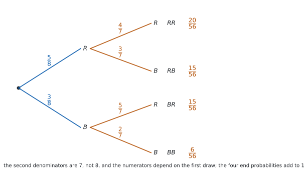

SL 4.6b — Conditional probability and independence（条件付き確率と独立）
- conditional probability（条件付き確率）\(P(A \mid B)\) の意味を、標本空間が狭まることとして説明できる。
- \(P(A \mid B) = \dfrac{P(A \cap B)}{P(B)}\) を使える。
- two-way table（二元表）や Venn 図から、条件付き確率を読める。
- かけ算の形 \(P(A \cap B) = P(B)\,P(A \mid B)\) を使える。
- without replacement（非復元、もどさない）の樹形図をかき、\(2\) 段目の確率を正しく入れられる。
- independent events（独立な事象）を \(P(A \cap B) = P(A)P(B)\) で判定できる。
- mutually exclusive（互いに排反）と independent（独立）のちがいを述べられる。
前提は SL 4.6a の図です。 そして、このページで条件付き確率を図から読めるようになったら、SL 4.11 に進みます。4.11 では、同じ関係を式として使い、未知数を含む問題に当てはめます。
The idea
1. 「分かったこと」で標本空間が狭まる
conditional probability（条件付き確率）\(P(A \mid B)\) は、「\(B\) が起こったと分かっているときの \(A\) の確率」です。\(A \mid B\) は「\(B\) のもとでの \(A\)」と読みます。
分かったことは、標本空間をせまくします。 もともと \(U\) 全体だったのが、\(B\) の中だけになります（図 1 (a)）。
分母が \(n(U)\) から \(n(B)\) に変わります。 分子は「\(A\) でも \(B\) でもあるもの」、つまり \(A \cap B\) です。結果がどれも同様に確からしいとき、次のように数えられます。
\[ P(A \mid B) = \frac{n(A \cap B)}{n(B)} \]
\(P(A \mid B)\) と \(P(B \mid A)\) は、ふつう別のものです。 分子はどちらも \(P(A \cap B)\) ですが、分母がちがいます（\(2\) つを比べるので \(P(A) > 0\)、\(P(B) > 0\) とします）。\(P(A) = P(B)\) なら一致します。 また \(A\) と \(B\) が排反で \(P(A \cap B) = 0\) なら、\(P(A)\) と \(P(B)\) がちがっていても両方 \(0\) になって一致します。この \(2\) つを入れかえるのは、いちばん多い誤りです。
2. 確率で書いた式
上の式の分子と分母を \(n(U)\) で割ると、確率だけの式になります。
\[ P(A \mid B) = \frac{P(A \cap B)}{P(B)} \tag{1}\]
\(P(A \mid B) = \dfrac{P(A \cap B)}{P(B)}\) は、公式集の 4.6 の欄に Conditional probability として載っています。試験中に配られるので、覚える必要はありません。
覚えるのは、分母が \(P(B)\) のほうだということです。 縦棒の右にあるほうが分母です。
\(P(B) = 0\) のときは使えません。 起こらないと分かっていることを「起こった」とするのは、意味がありません。
3. 二元表から読む
two-way table（二元表）は、\(2\) つの分け方でまとめた表です。行と列の合計が付いています。
| \(A\) | \(A'\) | total | |
|---|---|---|---|
| \(B\) | \(n(A \cap B)\) | \(n(A' \cap B)\) | \(n(B)\) |
| \(B'\) | \(n(A \cap B')\) | \(n(A' \cap B')\) | \(n(B')\) |
| total | \(n(A)\) | \(n(A')\) | \(n(U)\) |
条件付き確率は、\(1\) 行（または \(1\) 列）の中だけで考えます。
- \(P(A \mid B)\) は、\(B\) の行の中で \(A\) の列を見ます。分母はその行の合計です。
- \(P(B \mid A)\) は、\(A\) の列の中で \(B\) の行を見ます。分母はその列の合計です。
分母をどこから取ったかを、必ず書いてください。 表を見ながらでも、行と列は入れかわります。
4. かけ算の形
式 1 の両辺に \(P(B)\) をかけると、次の形になります。
\[ P(A \cap B) = P(B)\,P(A \mid B) \tag{2}\]
これが、樹形図で枝に沿ってかけていることの正体です。 \(1\) 段目の枝が \(P(B)\)、\(2\) 段目の枝が \(P(A \mid B)\) です。
\(2\) 段目の枝は、いつも条件付き確率です。 SL 4.6a でもどす場合を扱いましたが、あのときは \(P(A \mid B) = P(A)\) になっていたので、\(1\) 段目と同じ数を書けたのです。
5. もどさない場合（without replacement）
取ったものをもどさないと、\(2\) 回目のとき中身が減っています（図 1 (b)）。
- 分母が \(1\) 減ります。 \(10\) 個から \(1\) 個取れば、次は \(9\) 個です。
- 分子は、\(1\) 回目に何が出たかで変わります。 赤を取ったあとなら、赤は \(1\) 個減っています。
枝先を全部足すと \(1\) になります。 もどさない場合でも、ここは変わりません。検算に使えます。
「少なくとも \(1\) つ」は、余事象が速いことが多いです。 「少なくとも \(1\) つは赤」なら、\(1 - P(\text{赤が 1 個も出ない})\) です。
6. independent events（独立な事象）
independent（独立）とは、一方が起こったと分かっても、もう一方の確率が変わらないことです。
\[ P(A \cap B) = P(A)P(B) \tag{3}\]
\(P(A \cap B) = P(A)P(B)\) は、公式集の 4.6 の欄に Independent events として載っています。
独立かどうかを聞かれたら、この式が成り立つかを調べます。 左辺と右辺を別々に計算して、比べます。
言いかえると \(P(A \mid B) = P(A)\) です。 式 1 に 式 3 を入れると、\(P(A \mid B) = \dfrac{P(A)P(B)}{P(B)} = P(A)\) になります。
独立は、「関係がなさそう」という感じで決めるものではありません。 数で確かめます。
もどす場合、\(1\) 回目の結果は \(2\) 回目の枝の確率を変えません。 だから \(2\) 段目に \(1\) 段目と同じ数を書けます。もどさない場合は変わります（袋の中身が \(1\) 種類しかない、といった特別な場合をのぞきます）。ここが SL 4.6a との境目です。
これは「\(1\) 回目と \(2\) 回目が独立かどうか」の話です。 もどす試行だからといって、その試行に関するどの \(2\) つの事象も独立になるわけではありません。独立かどうかは、事象を決めてから 式 3 で確かめます。
このページでは、表・樹形図・与えられた確率から、\(P(A \cap B) = P(A)P(B)\) が成り立つかどうかを数で確かめます。 独立の形式的な定義と、\(P(A \mid B) = P(A) = P(A \mid B')\) という書き方を使った判定は、SL 4.11 で扱います。
7. 排反と独立はちがう
| mutually exclusive（互いに排反） | independent（独立） | |
|---|---|---|
| 式 | \(P(A \cap B) = 0\) | \(P(A \cap B) = P(A)P(B)\) |
| 意味 | 同時には起こらない | 一方を知っても、もう一方の確率が変わらない |
| \(B\) が起こったと分かると | \(A\) は起こらない（\(P(B) \ne 0\) なら \(P(A \mid B) = 0\)） | \(A\) の確率は \(P(A)\) のまま |
排反な \(2\) つは、ふつう独立ではありません。 \(B\) が起きたと分かれば \(A\) は起こらないので、\(A\) の確率は大きく変わります。
両方が同時に成り立つのは、\(P(A)\) か \(P(B)\) が \(0\) のときだけです。 \(P(A)P(B) = 0\) になるのは、そのときだけだからです。
このページの計算も、Paper 1 でも Paper 2 でも手でできます。割る・かける、だけです。
答えは分数のままで書けます。 \(\dfrac{21}{56}\) は \(\dfrac{3}{8}\) まで約分します。

Why it works
なぜ、分母が \(P(B)\) になるのでしょうか。 「\(B\) が起こった」と分かった時点で、\(B\) の外の結果はもう起こりえません。だから、確率をはかる土台が \(U\) から \(B\) に変わります。
結果がどれも同様に確からしいなら、\(B\) の中には \(n(B)\) 個の結果があります。そのうち \(A\) にも入っているのは \(n(A \cap B)\) 個です。だから
\[ P(A \mid B) = \frac{n(A \cap B)}{n(B)} \]
です。分子と分母を \(n(U)\) で割ると
\[ P(A \mid B) = \frac{n(A \cap B) / n(U)}{n(B) / n(U)} = \frac{P(A \cap B)}{P(B)} \]
となり、式 1 が出ます。
同様に確からしくない場合も、同じ式を定義として使います。 \(B\) の中の確率を、合計が \(1\) になるように引きのばす、という決め方です。\(B\) の中の確率を全部足すと \(P(B)\) なので、\(P(B)\) で割れば合計が \(1\) になります。
なぜ、もどさないと \(2\) 段目が変わるのでしょうか。 数えれば分かります。
図 (b) と同じ袋で考えます。白玉 \(2\) 個と黒玉 \(3\) 個に \(W_1, W_2, B_1, B_2, B_3\) と名前を付け、\(1\) 個取ってもどさず、もう \(1\) 個取ります。順序を区別した組は
\[ 5 \times 4 = 20 \]
とおりで、どれも同様に確からしいです。\(2\) 回とも白になる組は \(W_1 W_2\) と \(W_2 W_1\) の \(2\) とおりなので、確率は \(\dfrac{2}{20}\) です。
枝に沿ってかけると \(\dfrac{2}{5} \times \dfrac{1}{4} = \dfrac{2}{20}\) です。数えた答えと一致します。（図 (b) に書いてあるのと同じ値です。）\(2\) 段目が \(\dfrac{1}{4}\) になっているのは、白 \(1\) 個と黒 \(3\) 個の \(4\) 個しか残っていないからです。
もどす場合と比べます。 もどせば組は \(5 \times 5 = 25\) とおりで、\(2\) 回とも白は \(2 \times 2 = 4\) とおり、確率は \(\dfrac{4}{25}\) です。分母をそろえずにたすき掛けで比べると、\(2 \times 25 = 50\)、\(4 \times 20 = 80\) なので \(\dfrac{2}{20} < \dfrac{4}{25}\) です。白を \(1\) 個取ってしまうと、次に白が出にくくなるからです。
なぜ、独立の式が \(P(A \cap B) = P(A)P(B)\) なのでしょうか。 独立を「\(P(A \mid B) = P(A)\)」と決めたとします。式 2 に入れると
\[ P(A \cap B) = P(B)\,P(A \mid B) = P(B)P(A) \]
です。逆に \(P(A \cap B) = P(A)P(B)\) から出発しても、\(P(B) \ne 0\) なら 式 1 で \(P(A \mid B) = P(A)\) が出ます。同じことを \(2\) とおりに書いているだけです。
\(P(A \cap B) = P(A)P(B)\) のほうを式に選ぶ理由があります。 こちらは \(P(B) = 0\) でも意味を持ち、\(A\) と \(B\) を入れかえても形が同じだからです。
なぜ、排反と独立が同時に成り立ちにくいのでしょうか。 両方成り立つなら \(P(A)P(B) = 0\) です。積が \(0\) になるのは、\(P(A) = 0\) か \(P(B) = 0\) のときだけです。どちらも \(0\) でなければ、排反な \(2\) つは独立になりません。
Worked examples
問題文は英語です。意味が理解できなかったら、問題文の下の「日本語訳」を開いてください。解説は日本語です。
例題も演習も、すべて電卓なしで解けます。 答えは分数のままで書いてかまいません。
例題 1 The table shows \(80\) students, classified by year group and by whether they wear glasses.
| glasses | no glasses | total | |
|---|---|---|---|
| Year \(12\) | \(14\) | \(26\) | \(40\) |
| Year \(13\) | \(10\) | \(30\) | \(40\) |
| total | \(24\) | \(56\) | \(80\) |
One student is chosen at random.
(a) Find the probability that the student wears glasses.
(b) Find the probability that the student wears glasses, given that the student is in Year \(12\).
(c) Find the probability that the student is in Year \(12\), given that the student wears glasses.
(d) Explain whether wearing glasses and being in Year \(12\) are independent.
日本語訳
表は \(80\) 人の生徒を、学年と、めがねをかけているかどうかで分類したものです。\(1\) 人を無作為に選びます。
(a) その生徒がめがねをかけている確率を求めなさい。
(b) その生徒が Year \(12\) であると分かっているとき、めがねをかけている確率を求めなさい。
(c) その生徒がめがねをかけていると分かっているとき、Year \(12\) である確率を求めなさい。
(d) めがねをかけていることと Year \(12\) であることが独立かどうかを説明しなさい。
(a) 表全体が標本空間です。
\[ P(G) = \frac{24}{80} = \frac{3}{10} \]
(b) Year \(12\) の行だけを見ます（第 3 節）。分母はその行の合計 \(40\) です。
\[ P(G \mid Y) = \frac{14}{40} = \frac{7}{20} \]
(c) めがねの列だけを見ます。分母はその列の合計 \(24\) です。
\[ P(Y \mid G) = \frac{14}{24} = \frac{7}{12} \]
(d) Explain whether なので、英語で理由を書きます。式 3 で調べます。
\[ P(Y \cap G) = \frac{14}{80} = \frac{7}{40}, \qquad P(Y)P(G) = \frac{40}{80} \times \frac{24}{80} = \frac{3}{20} = \frac{6}{40} \]
試験ではこう書く
Here \(P(Y \cap G) = \dfrac{14}{80} = \dfrac{7}{40}\), while \(P(Y) \times P(G) = \dfrac{40}{80} \times \dfrac{24}{80} = \dfrac{6}{40}\). These are not equal, so the two events are not independent. Knowing that a student is in Year \(12\) raises the probability of wearing glasses from \(\dfrac{3}{10}\) to \(\dfrac{7}{20}\).
（\(P(Y \cap G)\) と \(P(Y)P(G)\) が等しくないので独立ではない。Year \(12\) と分かると、めがねの確率が \(\dfrac{3}{10}\) から \(\dfrac{7}{20}\) に上がる、という意味です。）
検算（(a) について）。 列の合計から確かめます。 \(24 + 56 = 80\) ✓ 表全体と一致します。
検算（(b) と (c) の分母が正しいか）。 同じ条件のもとで、余事象と足して \(1\) になるか見ます。 (b) は Year \(12\) の中の話なので \(P(G \mid Y) + P(G' \mid Y) = \dfrac{14}{40} + \dfrac{26}{40} = 1\) ✓、(c) はめがねの中の話なので \(P(Y \mid G) + P(Y' \mid G) = \dfrac{14}{24} + \dfrac{10}{24} = 1\) ✓ 分母を取りちがえると、たとえば \(\dfrac{14}{24} + \dfrac{26}{24}\) となって \(1\) をこえます。
検算（(d) について、別の見方）。 \(P(G \mid Y) = \dfrac{7}{20}\) で、\(P(G) = \dfrac{3}{10} = \dfrac{6}{20}\) です。等しくないので、やはり独立ではありません ✓
(a) \[P(G) = \frac{24}{80} = \frac{3}{10}\]
(b) \[P(G \mid Y) = \frac{14}{40} = \frac{7}{20}\]
(c) \[P(Y \mid G) = \frac{14}{24} = \frac{7}{12}\]
(d) \[P(Y \cap G) = \frac{7}{40} \ne P(Y)P(G) = \frac{6}{40}\] so they are not independent
例題 2 For two events \(A\) and \(B\), \(P(A) = 0.6\), \(P(B) = 0.5\) and \(P(A \cap B) = 0.3\).
(a) Find \(P(A \mid B)\).
(b) Find \(P(B \mid A)\).
(c) Show that \(A\) and \(B\) are independent.
(d) Explain what your answer to part (a) says about the effect of knowing that \(B\) has happened.
日本語訳
\(2\) つの事象 \(A\)、\(B\) について、\(P(A) = 0.6\)、\(P(B) = 0.5\)、\(P(A \cap B) = 0.3\) です。
(a) \(P(A \mid B)\) を求めなさい。
(b) \(P(B \mid A)\) を求めなさい。
(c) \(A\) と \(B\) が独立であることを示しなさい。
(d) (a) の答えが、\(B\) が起こったと分かることの影響について何を言っているかを説明しなさい。
(a) 式 1 を使います。分母は縦棒の右の \(P(B)\) です。
\[ P(A \mid B) = \frac{0.3}{0.5} = 0.6 \]
(b) 今度は分母が \(P(A)\) です。
\[ P(B \mid A) = \frac{0.3}{0.6} = 0.5 \]
(c) 式 3 の両辺を計算します。
\[ P(A)P(B) = 0.6 \times 0.5 = 0.3 = P(A \cap B) \]
等しいので、\(A\) と \(B\) は独立です。
(d) Explain what なので、英語で書きます。
試験ではこう書く
Part (a) gives \(P(A \mid B) = 0.6\), which is the same as \(P(A) = 0.6\). Knowing that \(B\) has happened therefore leaves the probability of \(A\) unchanged, which is what it means for \(A\) and \(B\) to be independent.
（(a) の \(0.6\) は \(P(A)\) と同じである。\(B\) が起こったと分かっても \(A\) の確率は変わらない。これが独立の意味である、という意味です。）
検算（(a) と (b) について）。 どちらも \(1\) 以下か見ます。 \(0.6 \le 1\)、\(0.5 \le 1\) ✓ 分子と分母を逆にしていたら、\(1\) 以上になります。
検算（(b) の別の見方）。 独立なら \(P(B \mid A) = P(B) = 0.5\) です ✓ 計算した答えと一致します。
検算（(c) について、条件付き確率で）。 (a) の \(P(A \mid B) = 0.6\) は \(P(A) = 0.6\) と等しく、(b) の \(P(B \mid A) = 0.5\) は \(P(B) = 0.5\) と等しいです ✓ どちらから見ても、知って確率が変わっていません。
検算（与えられた \(3\) つの値が矛盾していないか）。 \(P(A \cup B) = 0.6 + 0.5 - 0.3 = 0.8\) で、\(1\) 以下です ✓
(a) \[P(A \mid B) = \frac{0.3}{0.5} = 0.6\]
(b) \[P(B \mid A) = \frac{0.3}{0.6} = 0.5\]
(c) \[P(A)P(B) = 0.6 \times 0.5 = 0.3 = P(A \cap B)\] so \(A\) and \(B\) are independent
(d) \(P(A \mid B) = P(A) = 0.6\), so knowing \(B\) has happened does not change the probability of \(A\)
例題 3 A bag contains \(5\) red counters and \(3\) blue counters. Two counters are taken at random, one after the other, without replacement.
(a) Draw a tree diagram for the two draws.
(b) Find the probability that both counters are red.
(c) Find the probability that exactly one counter is red.
(d) Explain why the probabilities on the second set of branches are not the same as those on the first.
日本語訳
袋の中に赤い駒が \(5\) 個、青い駒が \(3\) 個入っています。\(2\) 個を無作為に、\(1\) 個ずつ、もどさずに取り出します。
(a) \(2\) 回の取り出しについて樹形図をかきなさい。
(b) \(2\) 個とも赤である確率を求めなさい。
(c) ちょうど \(1\) 個が赤である確率を求めなさい。
(d) \(2\) 段目の枝の確率が \(1\) 段目と同じでない理由を説明しなさい。
(a) \(1\) 段目は \(P(R) = \dfrac{5}{8}\)、\(P(B) = \dfrac{3}{8}\) です。
\(2\) 段目は、残り \(7\) 個から取ります。赤のあとなら赤は \(4\) 個、青のあとなら赤は \(5\) 個です。

(b) 枝に沿ってかけます（式 2）。
\[ P(RR) = \frac{5}{8} \times \frac{4}{7} = \frac{20}{56} = \frac{5}{14} \]
(c) \(RB\) と \(BR\) の \(2\) 本を足します。
\[ P(\text{exactly one red}) = \frac{5}{8} \times \frac{3}{7} + \frac{3}{8} \times \frac{5}{7} = \frac{15}{56} + \frac{15}{56} = \frac{30}{56} = \frac{15}{28} \]
(d) Explain why なので、英語で理由を書きます。
試験ではこう書く
The first counter is not replaced, so only \(7\) counters remain for the second draw and the denominator falls from \(8\) to \(7\). The numerator also depends on the first result: if a red counter was taken, only \(4\) reds remain, but if a blue counter was taken, all \(5\) reds remain. The second probabilities are therefore conditional on the first draw.
（\(1\) 個目をもどさないので、\(2\) 回目は \(7\) 個からになり、分母が \(8\) から \(7\) に減る。分子も \(1\) 回目によって変わり、赤を取れば赤は \(4\) 個、青を取れば赤は \(5\) 個残る。だから \(2\) 段目は条件付き確率である、という意味です。）
検算（枝先の合計）。 \(\dfrac{20}{56} + \dfrac{15}{56} + \dfrac{15}{56} + \dfrac{6}{56} = \dfrac{56}{56} = 1\) ✓
検算（(b) について、数えます）。 駒に名前を付けて数えます。 順序を区別した組は \(8 \times 7 = 56\) とおりです。\(2\) 個とも赤になる組は \(5 \times 4 = 20\) とおりです。\(\dfrac{20}{56} = \dfrac{5}{14}\) ✓
検算（もどす場合と比べます）。 もどせば \(\dfrac{5}{8} \times \dfrac{5}{8} = \dfrac{25}{64}\) で、\(\dfrac{5}{14} = \dfrac{160}{448}\)、\(\dfrac{25}{64} = \dfrac{175}{448}\) です。もどさないほうが小さくなっています ✓ 赤を \(1\) 個減らしたので、そうなるはずです。
(a) tree with first branches \(R\ \dfrac{5}{8}\), \(B\ \dfrac{3}{8}\); second branches \(\dfrac{4}{7}, \dfrac{3}{7}\) after \(R\) and \(\dfrac{5}{7}, \dfrac{2}{7}\) after \(B\)
(b) \[P(RR) = \frac{5}{8} \times \frac{4}{7} = \frac{20}{56} = \frac{5}{14}\]
(c) \[P = \frac{5}{8} \times \frac{3}{7} + \frac{3}{8} \times \frac{5}{7} = \frac{30}{56} = \frac{15}{28}\]
(d) the first counter is not replaced, so the second draw is from \(7\) counters and the number of reds left depends on the first result
例題 4 A factory has two machines. Machine \(M\) makes \(60\%\) of the items and machine \(N\) makes the rest. \(5\%\) of the items made by \(M\) are faulty, and \(10\%\) of the items made by \(N\) are faulty. One item is chosen at random.
(a) Find the probability that the item was made by \(M\) and is faulty.
(b) Find the probability that the item is faulty.
(c) Given that the item is faulty, find the probability that it was made by \(M\).
(d) Explain why the answer to part (c) is not \(0.6\).
日本語訳
ある工場に機械が \(2\) 台あります。機械 \(M\) が製品の \(60\%\) を、機械 \(N\) が残りを作ります。\(M\) が作った製品の \(5\%\) が不良品で、\(N\) が作った製品の \(10\%\) が不良品です。製品を \(1\) つ無作為に選びます。
(a) その製品が \(M\) で作られ、かつ不良品である確率を求めなさい。
(b) その製品が不良品である確率を求めなさい。
(c) その製品が不良品であると分かっているとき、\(M\) で作られた確率を求めなさい。
(d) (c) の答えが \(0.6\) でない理由を説明しなさい。
樹形図をかきます。\(1\) 段目は機械、\(2\) 段目は不良品かどうかです。\(2\) 段目の枝は条件付き確率です。
(a) 式 2 を使います。\(P(M) = 0.6\)、\(P(F \mid M) = 0.05\) です。
\[ P(M \cap F) = 0.6 \times 0.05 = 0.03 \]
(b) \(N\) のほうも計算して足します。\(P(N) = 0.4\)、\(P(F \mid N) = 0.10\) です。
\[ P(N \cap F) = 0.4 \times 0.10 = 0.04 \]
\[ P(F) = 0.03 + 0.04 = 0.07 \]
(c) 式 1 を使います。分母は \(P(F)\) です。
\[ P(M \mid F) = \frac{0.03}{0.07} = \frac{3}{7} \]
(d) Explain why なので、英語で理由を書きます。
試験ではこう書く
The value \(0.6\) is \(P(M)\), the probability before anything is known about the item. Once the item is known to be faulty, the sample space is reduced to faulty items only, and machine \(N\) accounts for more of them: although it makes fewer items, its faulty rate is twice as high, giving \(0.4 \times 0.10 = 0.04\) against \(0.6 \times 0.05 = 0.03\). The correct probability is \(\dfrac{0.03}{0.07} = \dfrac{3}{7}\), which is below \(0.6\).
（\(0.6\) は何も分かっていないときの \(P(M)\) である。不良品と分かると標本空間が不良品だけに狭まり、\(N\) の不良率が \(2\) 倍なので \(N\) の割合が大きくなる。正しい確率は \(\dfrac{3}{7}\) で、\(0.6\) より小さい、という意味です。）
検算（(b) について、はさみ撃ちで）。 \(P(F)\) は \(2\) つの不良率の間に入るはずです。 どちらの機械でも不良率は \(0.05\) 以上 \(0.10\) 以下なので、全体でも \(0.05 \le P(F) \le 0.10\) です。\(0.07\) はこの間にあります ✓ \(0.05 + 0.10 = 0.15\) のように足してしまうと、上をこえます。
検算（(c) について、\(N\) の側も出します）。 \(P(N \mid F) = \dfrac{0.04}{0.07} = \dfrac{4}{7}\) です。\(\dfrac{3}{7} + \dfrac{4}{7} = 1\) ✓ 不良品は \(M\) か \(N\) のどちらかで作られています。
検算（(c) について、個数で）。 \(10000\) 個作ると、\(M\) が \(6000\) 個で不良は \(300\) 個、\(N\) が \(4000\) 個で不良は \(400\) 個です。不良品 \(700\) 個のうち \(M\) は \(300\) 個なので \(\dfrac{300}{700} = \dfrac{3}{7}\) ✓
(a) \[P(M \cap F) = 0.6 \times 0.05 = 0.03\]
(b) \[P(F) = 0.6 \times 0.05 + 0.4 \times 0.10 = 0.03 + 0.04 = 0.07\]
(c) \[P(M \mid F) = \frac{0.03}{0.07} = \frac{3}{7}\]
(d) \(0.6\) is \(P(M)\) before anything is known; knowing the item is faulty restricts the sample space to faulty items, among which \(N\) has a larger share
Common errors
分母は縦棒の右にあるほうです（式 1）。表なら、行を見るか列を見るかが変わります。
分母は \(n(B)\) です（第 1 節）。全体ではなく、狭まったほうの合計です。
分母が \(1\) 減り、分子も \(1\) 回目によって変わります（第 5 節）。
\(P(A \cap B) = P(A)P(B)\) を実際に計算して比べます（式 3）。
排反なら \(P(A \mid B) = 0\) で、\(P(A)\) とはふつうちがいます（表 2）。
\(1\) つの分かれ目から出る枝は、必ず合計が \(1\) です。もどさない場合でも同じです（第 5 節）。
Exercises
各問題に、折りたたみが \(3\) つ付いています。日本語訳、解答例（答案用紙に書くべきこと。英語です）、解説（なぜそうなるか。日本語です）。
まず自分で解いて、次に解答例と見くらべてください。解説は、合わなかったときだけ開けば十分です。
1 The table shows \(50\) candidates for a driving test.
| passed | failed | total | |
|---|---|---|---|
| practised | \(27\) | \(3\) | \(30\) |
| did not practise | \(10\) | \(10\) | \(20\) |
| total | \(37\) | \(13\) | \(50\) |
One candidate is chosen at random. Find the probability that the candidate passed, given that the candidate practised, and the probability that the candidate practised, given that the candidate passed.
日本語訳
表は、運転免許試験を受けた \(50\) 人を表しています。\(1\) 人を無作為に選びます。練習したと分かっているときに合格した確率と、合格したと分かっているときに練習していた確率を求めなさい。
\[P(\text{pass} \mid \text{practised}) = \frac{27}{30} = \frac{9}{10}\]
\[P(\text{practised} \mid \text{pass}) = \frac{27}{37}\]
\(1\) つ目は practised の行、\(2\) つ目は passed の列を見ます（第 3 節）。分子はどちらも \(27\) ですが、分母がちがいます。
検算。 分母を表から確かめます。 practised の行の合計は \(27 + 3 = 30\) ✓、passed の列の合計は \(27 + 10 = 37\) ✓
検算（分母が正しいか）。 同じ条件のもとで、余事象と足して \(1\) になるか見ます。 practised の行なら \(\dfrac{27}{30} + \dfrac{3}{30} = 1\) ✓、passed の列なら \(\dfrac{27}{37} + \dfrac{10}{37} = 1\) ✓ 分母を取りちがえていると、この和が \(1\) になりません。
\(\dfrac{27}{37}\) は約分できません。 \(37\) は素数です。
2 For two events \(A\) and \(B\), \(P(A) = 0.5\), \(P(B) = 0.3\) and \(P(A \cap B) = 0.2\). Find \(P(A \mid B)\) and \(P(B \mid A)\). Explain whether \(A\) and \(B\) are independent.
日本語訳
\(2\) つの事象 \(A\)、\(B\) について、\(P(A) = 0.5\)、\(P(B) = 0.3\)、\(P(A \cap B) = 0.2\) です。\(P(A \mid B)\) と \(P(B \mid A)\) を求めなさい。\(A\) と \(B\) が独立かどうかを説明しなさい。
\[P(A \mid B) = \frac{0.2}{0.3} = \frac{2}{3}, \qquad P(B \mid A) = \frac{0.2}{0.5} = \frac{2}{5}\]
\[P(A)P(B) = 0.5 \times 0.3 = 0.15 \ne 0.2 = P(A \cap B)\]
so \(A\) and \(B\) are not independent
分母は縦棒の右です（式 1）。独立かどうかは 式 3 で調べます。
検算。 \(P(A \mid B)\) を \(P(A)\) と比べます。 \(\dfrac{2}{3} \approx 0.667\) で、\(P(A) = 0.5\) とちがいます ✓ 独立でないことと合っています。
検算（\(P(B \mid A)\) も同じように）。 \(\dfrac{2}{5} = 0.4\) で、\(P(B) = 0.3\) とちがいます ✓
試験ではこう書く
For independent events \(P(A \cap B) = P(A)P(B)\). Here \(P(A)P(B) = 0.5 \times 0.3 = 0.15\), but \(P(A \cap B) = 0.2\). These are not equal, so \(A\) and \(B\) are not independent. Knowing that \(B\) has happened raises the probability of \(A\) from \(0.5\) to \(\dfrac{2}{3}\).
3 A box contains \(4\) green pens and \(6\) red pens. Two pens are taken at random, one after the other, without replacement. Find the probability that both pens are green, and the probability that at least one pen is green.
日本語訳
箱の中に緑のペンが \(4\) 本、赤のペンが \(6\) 本入っています。\(2\) 本を無作為に、\(1\) 本ずつ、もどさずに取り出します。\(2\) 本とも緑である確率と、少なくとも \(1\) 本が緑である確率を求めなさい。
\[P(GG) = \frac{4}{10} \times \frac{3}{9} = \frac{12}{90} = \frac{2}{15}\]
\[P(\text{at least one green}) = 1 - \frac{6}{10} \times \frac{5}{9} = 1 - \frac{30}{90} = \frac{2}{3}\]
もどさないので、\(2\) 段目の分母は \(9\) です（第 5 節）。「少なくとも \(1\) 本」は、余事象「\(2\) 本とも赤」を使います。
検算。 直接足します。 ちょうど \(1\) 本が緑なのは \(\dfrac{4}{10} \times \dfrac{6}{9} + \dfrac{6}{10} \times \dfrac{4}{9} = \dfrac{48}{90}\) です。\(\dfrac{12}{90} + \dfrac{48}{90} = \dfrac{60}{90} = \dfrac{2}{3}\) ✓ 余事象で出した答えと一致します。
検算（数えます）。 ペンに名前を付けると、順序を区別した組は \(10 \times 9 = 90\) とおりです。\(2\) 本とも緑は \(4 \times 3 = 12\) とおり ✓
検算（もどす場合と比べます）。 もどせば \(\dfrac{4}{10} \times \dfrac{4}{10} = \dfrac{16}{100}\) で、\(\dfrac{2}{15} \approx 0.133\) より大きいです ✓ 緑を \(1\) 本減らしたので、そうなるはずです。
4 For two events \(A\) and \(B\), \(P(A) = 0.5\), \(P(B) = 0.4\) and \(P(A \mid B) = 0.25\). Find \(P(A \cap B)\) and \(P(B \mid A)\).
日本語訳
\(2\) つの事象 \(A\)、\(B\) について、\(P(A) = 0.5\)、\(P(B) = 0.4\)、\(P(A \mid B) = 0.25\) です。\(P(A \cap B)\) と \(P(B \mid A)\) を求めなさい。
\[P(A \cap B) = P(B)\,P(A \mid B) = 0.4 \times 0.25 = 0.1\]
\[P(B \mid A) = \frac{0.1}{0.5} = 0.2\]
かけ算の形を使います（式 2）。次に、分母を \(P(A)\) にして 式 1 を使います。
検算。 \(P(A \cap B)\) を \(2\) とおりに書いて比べます。 \(P(B)\,P(A \mid B) = 0.4 \times 0.25 = 0.1\) と、\(P(A)\,P(B \mid A) = 0.5 \times 0.2 = 0.1\) ✓ 一致します。かける相手を \(P(A)\) と \(P(B)\) で取りちがえていると、この \(2\) つが合いません。
検算（大小）。 \(P(A \cap B) = 0.1\) は \(P(A) = 0.5\) より小さく、\(P(B) = 0.4\) より小さいです ✓ 共通部分は、どちらの事象よりも大きくなりません。
検算（独立ではないこと）。 \(P(A)P(B) = 0.5 \times 0.4 = 0.2 \ne 0.1\) です ✓ \(P(A \mid B) = 0.25\) が \(P(A) = 0.5\) とちがうことと合っています。
5 The table shows \(50\) people, classified by two events \(X\) and \(Y\).
| \(X\) | \(X'\) | total | |
|---|---|---|---|
| \(Y\) | \(12\) | \(8\) | \(20\) |
| \(Y'\) | \(18\) | \(12\) | \(30\) |
| total | \(30\) | \(20\) | \(50\) |
One person is chosen at random. Explain whether \(X\) and \(Y\) are independent.
日本語訳
表は \(50\) 人を、\(2\) つの事象 \(X\)、\(Y\) で分類したものです。\(1\) 人を無作為に選びます。\(X\) と \(Y\) が独立かどうかを説明しなさい。
\[P(X \cap Y) = \frac{12}{50} = \frac{6}{25}\]
\[P(X)P(Y) = \frac{30}{50} \times \frac{20}{50} = \frac{3}{5} \times \frac{2}{5} = \frac{6}{25}\]
these are equal, so \(X\) and \(Y\) are independent
式 3 の両辺を、表の数から別々に計算して比べます。
検算。 条件付き確率でも見ます。 \(P(X \mid Y) = \dfrac{12}{20} = \dfrac{3}{5}\) で、\(P(X) = \dfrac{30}{50} = \dfrac{3}{5}\) です ✓ 等しいので独立です。
検算（もう一方の行でも）。 \(P(X \mid Y') = \dfrac{18}{30} = \dfrac{3}{5}\) です ✓ どちらの行でも同じ割合になっています（この見方を式にしたものが SL 4.11 です）。
試験ではこう書く
From the table \(P(X \cap Y) = \dfrac{12}{50} = \dfrac{6}{25}\), and \(P(X) \times P(Y) = \dfrac{30}{50} \times \dfrac{20}{50} = \dfrac{6}{25}\). These are equal, so \(X\) and \(Y\) are independent. Equivalently, \(P(X \mid Y) = \dfrac{12}{20} = \dfrac{3}{5}\), which is the same as \(P(X) = \dfrac{3}{5}\), so knowing \(Y\) does not change the probability of \(X\).
6 A batch of \(12\) components contains \(4\) that are faulty. Two components are taken at random, one after the other, without replacement. Find the probability that at least one of them is faulty.
日本語訳
\(12\) 個の部品の中に、不良品が \(4\) 個あります。\(2\) 個を無作為に、\(1\) 個ずつ、もどさずに取り出します。少なくとも \(1\) 個が不良品である確率を求めなさい。
\[P(\text{no faulty}) = \frac{8}{12} \times \frac{7}{11} = \frac{56}{132} = \frac{14}{33}\]
\[P(\text{at least one faulty}) = 1 - \frac{14}{33} = \frac{19}{33}\]
余事象「\(2\) 個とも良品」を先に出します（第 5 節）。良品は \(12 - 4 = 8\) 個です。
検算。 直接足します。 不良品がちょうど \(1\) 個なのは \(\dfrac{8}{12} \times \dfrac{4}{11} + \dfrac{4}{12} \times \dfrac{8}{11} = \dfrac{64}{132}\)、\(2\) 個ともは \(\dfrac{4}{12} \times \dfrac{3}{11} = \dfrac{12}{132}\) です。\(\dfrac{64 + 12}{132} = \dfrac{76}{132} = \dfrac{19}{33}\) ✓
検算（枝先の合計）。 \(\dfrac{56 + 64 + 12}{132} = \dfrac{132}{132} = 1\) ✓
検算（数えます）。 順序を区別した組は \(12 \times 11 = 132\) とおり、\(2\) 個とも良品は \(8 \times 7 = 56\) とおりです ✓
7 Give an example of two events that are mutually exclusive but not independent, and an example of two events that are independent but not mutually exclusive. In each case state the probabilities you are using. Explain how the two ideas differ.
日本語訳
互いに排反だが独立でない \(2\) つの事象の例と、独立だが互いに排反でない \(2\) つの事象の例を、それぞれ \(1\) つ挙げなさい。使った確率を書きなさい。\(2\) つの考え方がどうちがうかを説明しなさい。
mutually exclusive but not independent: one die, \(A\): the number is \(1\), \(B\): the number is \(2\)
\[P(A \cap B) = 0, \qquad P(A)P(B) = \frac{1}{6} \times \frac{1}{6} = \frac{1}{36} \ne 0\]
independent but not mutually exclusive: two dice, \(C\): the first shows \(1\), \(D\): the second shows \(2\)
\[P(C \cap D) = \frac{1}{36} = P(C)P(D), \qquad P(C \cap D) \ne 0\]
Give an example と Explain how なので、例を \(2\) つ挙げてから、式でちがいを述べます（表 2）。例は自分で作ってかまいません。下のものは \(1\) つの作り方です。
検算（\(1\) つ目の例が条件を満たすか）。 同時に起こりうるか見ます。 さいころ \(1\) 個を \(1\) 回投げると、\(1\) と \(2\) が同時に出ることはありません ✓ だから \(P(A \cap B) = 0\) で排反です。\(P(A)P(B) = \dfrac{1}{36}\) は \(0\) ではないので、独立ではありません ✓
検算（\(2\) つ目の例が条件を満たすか）。 さいころ \(2\) 個なら \((1, 2)\) が起こりうるので、排反ではありません ✓ \(P(C \cap D) = \dfrac{1}{36}\) と \(P(C)P(D) = \dfrac{1}{36}\) が等しいので、独立です ✓
検算（どちらの例も確率が \(0\) でないこと）。 \(\dfrac{1}{6}\) はどれも \(0\) ではありません ✓ 確率が \(0\) の事象を使うと、排反と独立が同時に成り立ってしまい、ちがいを示す例になりません。
試験ではこう書く
Mutually exclusive events cannot both happen, so \(P(A \cap B) = 0\). Independent events can both happen, but knowing that one has happened does not change the probability of the other, so \(P(A \cap B) = P(A)P(B)\). For example, with one die, “the number is \(1\)” and “the number is \(2\)” are mutually exclusive, but \(P(A)P(B) = \dfrac{1}{36} \ne 0\), so they are not independent. With two dice, “the first shows \(1\)” and “the second shows \(2\)” satisfy \(P(C \cap D) = \dfrac{1}{36} = P(C)P(D)\) and can both happen, so they are independent but not mutually exclusive.
8 For two events \(A\) and \(B\), \(P(A) = 0.55\), \(P(B) = 0.4\) and \(P(A \cup B) = 0.75\). By drawing a Venn diagram and writing the probability in each of the four regions, find \(P(A \cap B)\), \(P(A \mid B)\) and \(P(B \mid A)\).
日本語訳
\(2\) つの事象 \(A\)、\(B\) について、\(P(A) = 0.55\)、\(P(B) = 0.4\)、\(P(A \cup B) = 0.75\) です。ベン図をかいて \(4\) つの部分それぞれに確率を書き、\(P(A \cap B)\)、\(P(A \mid B)\)、\(P(B \mid A)\) を求めなさい。
\[P(A \cap B) = 0.55 + 0.4 - 0.75 = 0.2\]
Venn diagram: \(A\) only \(0.35\), both \(0.2\), \(B\) only \(0.2\), neither \(0.25\)
\[P(A \mid B) = \frac{0.2}{0.4} = \frac{1}{2}, \qquad P(B \mid A) = \frac{0.2}{0.55} = \frac{4}{11}\]
まず SL 4.6a の加法定理を移項して \(P(A \cap B)\) を出し、次に 式 1 を使います。
検算。 もどして確かめます。 \(0.55 + 0.4 - 0.2 = 0.75\) ✓ 与えられた \(P(A \cup B)\) と一致します。
検算（Venn 図の \(4\) つ）。 \(A\) だけ \(0.35\)、両方 \(0.2\)、\(B\) だけ \(0.2\)、外 \(0.25\) で、合計 \(1\) ✓ どれも \(0\) 以上です。
検算（独立ではないこと）。 \(P(A)P(B) = 0.55 \times 0.4 = 0.22 \ne 0.2\) です ✓ \(P(A \mid B) = 0.5\) が \(P(A) = 0.55\) とちがうことと合っています。
9 Box \(1\) contains \(3\) red balls and \(2\) white balls. Box \(2\) contains \(1\) red ball and \(4\) white balls. A fair coin is flipped: if it shows heads, a ball is taken at random from box \(1\), and if it shows tails, a ball is taken at random from box \(2\). Find the probability that the ball is red, and the probability that box \(1\) was used, given that the ball is red.
日本語訳
箱 \(1\) には赤い玉が \(3\) 個と白い玉が \(2\) 個、箱 \(2\) には赤い玉が \(1\) 個と白い玉が \(4\) 個入っています。公平なコインを投げ、表なら箱 \(1\) から、裏なら箱 \(2\) から、玉を \(1\) 個無作為に取り出します。玉が赤である確率と、玉が赤であると分かっているときに箱 \(1\) が使われた確率を求めなさい。
\[P(R) = \frac{1}{2} \times \frac{3}{5} + \frac{1}{2} \times \frac{1}{5} = \frac{3}{10} + \frac{1}{10} = \frac{2}{5}\]
\[P(\text{box } 1 \mid R) = \frac{3/10}{2/5} = \frac{3}{4}\]
樹形図で、\(1\) 段目がコイン、\(2\) 段目が玉の色です。\(2\) 段目は条件付き確率です（第 4 節）。
検算。 箱 \(2\) の側も出します。 \(P(\text{box } 2 \mid R) = \dfrac{1/10}{2/5} = \dfrac{1}{4}\) です。\(\dfrac{3}{4} + \dfrac{1}{4} = 1\) ✓ 赤い玉は、どちらかの箱から来ています。
検算（個数で）。 \(10\) 回のうち \(5\) 回が箱 \(1\)、\(5\) 回が箱 \(2\) とすると、赤は箱 \(1\) から \(5 \times \dfrac{3}{5} = 3\) 回、箱 \(2\) から \(5 \times \dfrac{1}{5} = 1\) 回です。赤 \(4\) 回のうち \(3\) 回が箱 \(1\) なので \(\dfrac{3}{4}\) ✓
検算（大小）。 \(\dfrac{3}{4}\) は \(\dfrac{1}{2}\) より大きいです ✓ 箱 \(1\) のほうが赤が多いので、赤が出たなら箱 \(1\) だった可能性が高くなります。
10 Two events \(A\) and \(B\) satisfy \(P(A) = 0.3\), \(P(B) = 0.5\) and \(P(A \cap B) = 0\). A student says that \(A\) and \(B\) must be independent because neither one affects the other. Explain why the student is wrong.
日本語訳
\(2\) つの事象 \(A\)、\(B\) が \(P(A) = 0.3\)、\(P(B) = 0.5\)、\(P(A \cap B) = 0\) を満たします。ある生徒が、「どちらも他方に影響しないので、\(A\) と \(B\) は独立にちがいない」と言いました。この生徒がまちがっている理由を説明しなさい。
\[P(A)P(B) = 0.3 \times 0.5 = 0.15 \ne 0 = P(A \cap B)\]
so \(A\) and \(B\) are not independent; they are mutually exclusive, and knowing \(B\) makes \(A\) impossible
Explain why なので、式で示してから意味を書きます（表 2）。\(P(A \cap B) = 0\) は「排反」であって「独立」ではありません。
検算。 条件付き確率で見ます。 \(P(A \mid B) = \dfrac{0}{0.5} = 0\) です。\(P(A) = 0.3\) とちがいます ✓ 「影響しない」どころか、\(B\) が起これば \(A\) は起こりません。
検算（両方が成り立つ場合）。 排反かつ独立になるのは \(P(A)P(B) = 0\) のとき、つまりどちらかの確率が \(0\) のときだけです ✓ ここでは \(0.3\) も \(0.5\) も \(0\) ではありません。
試験ではこう書く
For independent events \(P(A \cap B) = P(A)P(B)\). Here \(P(A)P(B) = 0.3 \times 0.5 = 0.15\), but \(P(A \cap B) = 0\), so the events are not independent. In fact \(P(A \cap B) = 0\) means they are mutually exclusive, so \(P(A \mid B) = 0\) while \(P(A) = 0.3\): knowing that \(B\) has happened changes the probability of \(A\) from \(0.3\) to \(0\).